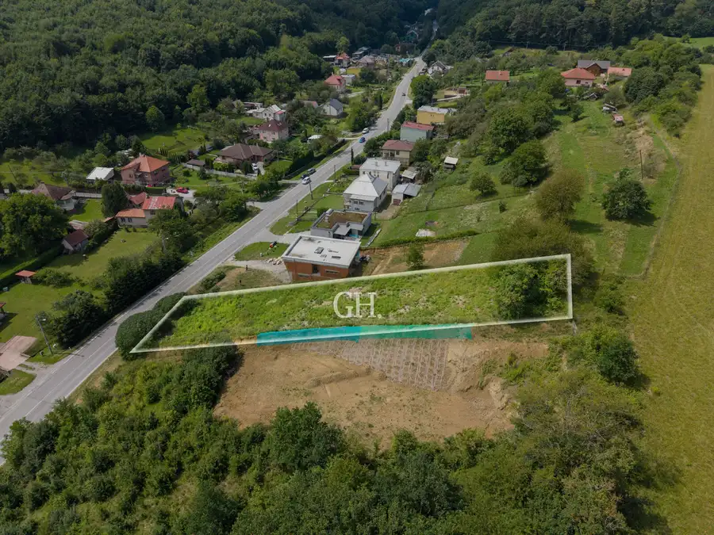
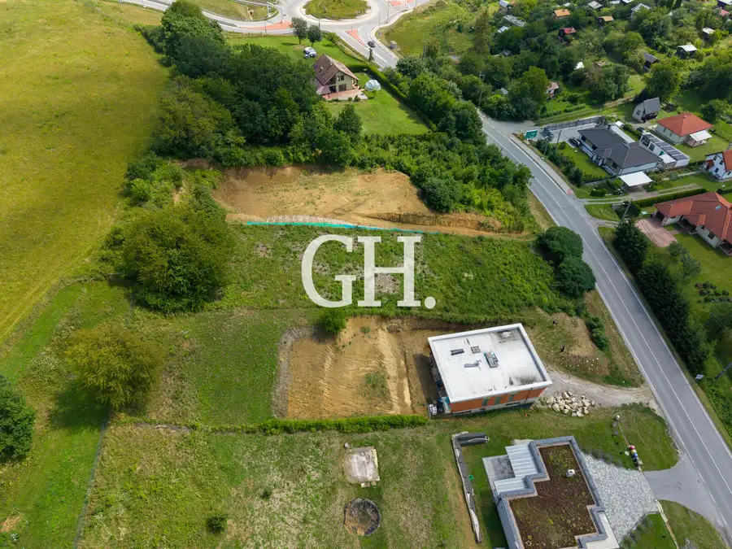
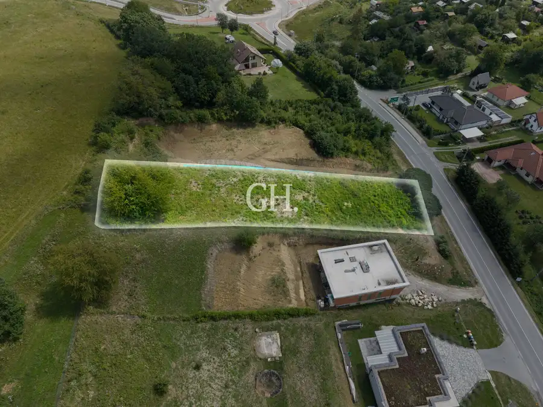

Stavebný pozemok na predaj 1416 m² Prešov-Vydumanec
Prešov



- Plocha1416 m²
- VlastníctvoOsobné
O nehnuteľnosti
Realitná kancelária GH Real ponúka na predaj slnečný stavebný pozemok o výmere 1 416 m² vo vyhľadávanej lokalite Vydumanec v Prešove. Pozemok je ideálny pre klientov, ktorí hľadajú súkromie, veľkorysý priestor a zároveň výbornú dostupnosť do mesta aj na diaľnicu.Základné informácie:- Výmera: 1 416 m²- Parcela: C KN 15743/53- Rozmery: cca 20,5 × 72 m- Terén: svahovitý, vhodný pre moderný dom s terasami alebo garážou v suteréne- Územnoplánovacia informácia: plochy určené pre bývanie v rodinných domoch- Inžinierske siete: pri pozemku- Prístup: priamo z asfaltovej mestskej komunikácieÚzemnoplánovacia informácia: k dispozícii na vyžiadaniePodľa územnoplánovacej informácie vydanej mestom Prešov sa pozemok nachádza v ploche RL B.1 -Plochy určené pre bývanie v rodinných domoch. Lokalita a dostupnosť:Centrum Prešova je vzdialené len 5–7 minút autom. V blízkosti sa nachádza Sídlisko II s kompletnou občianskou vybavenosťou (školy, obchody, pošta, zdravotné stredisko). Priamo v lokalite je zastávka MHD (linka č. 18).Veľkou výhodou je rýchle napojenie na diaľnicu D1 a R4, vďaka čomu sa pohodlne dostanete do Košíc, Popradu, Tatier či ďalších miest.Výhody lokality:Vydumanec ponúka pokojné bývanie v blízkosti prírody, lesné prostredie, možnosti turistiky, cyklotrás, prechádzok a aktívneho oddychu.Cena zahŕňa kompletný právny servis, vypracovanie zmlúv a pomoc pri vybavení hypotekárneho úveru. Pri rýchlom jednaní je možná dohoda na cene.Kontakt:Bc. Beáta Fedoršová, certifikovaný realitný maklér NARKS, GH Real Tel.: 0944 500 802 E-mail: fedorsova@ghrealke.com
Parametre
- Druh
- Pozemok pre rodinné domy
- Dátum zverejnenia
- 09. 07. 2026
- Elektrina
- Pri pozemku
- Odpadové vody
- Pri pozemku - Kanalizácia
- Plocha pozemku
- 1416 m²
- Plyn
- Nedostupné
- Terén pozemku
- Iný
- Typ
- Predaj
- Vlastníctvo
- Osobné
- Voda
- Pri pozemku